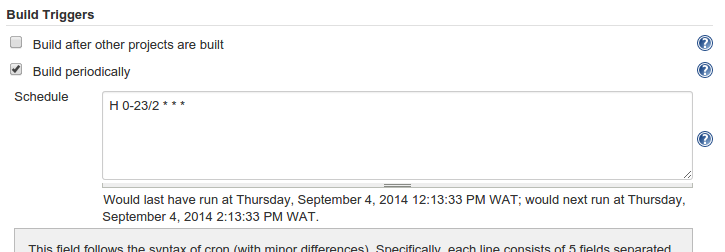
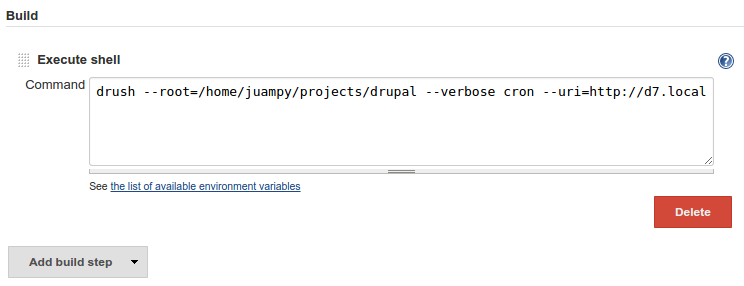

Jenkins and Drupal
Juampy NR - @juampynr
 Juampy NR -Â @juampynr
Senior Developer
about.me/juampynr
Juampy NR -Â @juampynr
Senior Developer
about.me/juampynr

What is Jenkins?
“Jenkins is an award-winning application that monitors executions of repeated jobs, such as building a software project or jobs run by cron.”Jenkins Wiki
Setting up Jenkins
- Installation.
- Adding credentials.
- Adding a node.
1. Installation
https://wiki.jenkins-ci.org/display/JENKINS/Installing+Jenkins2. Adding credentials
3. Adding a node
Job examples
- Running cron.
- Introducing continuous integration.
- Downloading data from production to development
- Deploying a release.
Running cron
Running cron - setting the node
Running cron - frequency
Running cron - do it!
Running cron - notifications
Running cron - overview
Introducing Continuous Integration
CI - Watching master branch
CI - Triggering on git push
CI - Execute shell script
Triggering jobs
- Manual trigger.
- Jenkins IRC bot.
- When another job finishes.
- When a certain comment is made in GitHub.
Tips
- Place the scripts used in jobs under version control.
- Make sure that jobs won't collide with each other.
Resources
Thanks! Questions?
@juampynr
about.me/juampynr
Lullabot is looking for projects!